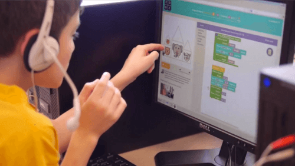

Базове програмування потрібно не тільки юним айтішникам. Розбираючись в алгоритмах і основах кодингу, діти вчаться масштабно мислити, вирішувати нестандартні завдання та логічно міркувати в будь-якій життєвій ситуації.
Перерахую кілька способів, які зацікавлять дитини світом програмування.
Існує багато онлайн і офлайн-проектів. Є платні та безкоштовні. Ви можете вибирати в залежності від того, де живете і який вид занять хотіли б запропонувати своїй дитині.

Плюс онлайн-освітніх платформ – займатися можна з будь-якої точки світу та в будь-який час доби. Мінуси онлайн – це відсутність живого спілкування, де можна обговорити будь-яке питання і відразу ж отримати зворотній зв’язок викладача. Не можна помацати робота, запустити його і увійти в азарт, програмуючи іграшки, які не кожен батько може дозволити купити.
Звичайно ж, ігри потрібно відбирати та контролювати процес гри. Інакше розвивається залежність і можливість писати ігри власноруч, ваш син або дочка вже не розглядатиме. Приклади ігор, які допомагають зацікавити юних дослідників програмуванням:
Програмувати – не означає стати розробником
Відповідаючи на запитання батьків, чи варто завантажувати дитячий мозок алгоритмами, математичним підходом до завдань і кодінгом – однозначно скажу: «Варто!». Адже програмуючи в перерахованих середовищах, дитина відразу бачить результати своєї роботи, вчиться алгоритмічно мислити.
Навіть якщо діти не підуть в галузь IT – навички зв’язно і послідовно мислити, які тренуються під час написання коду, стануть в нагоді, незалежно від сфери діяльності.